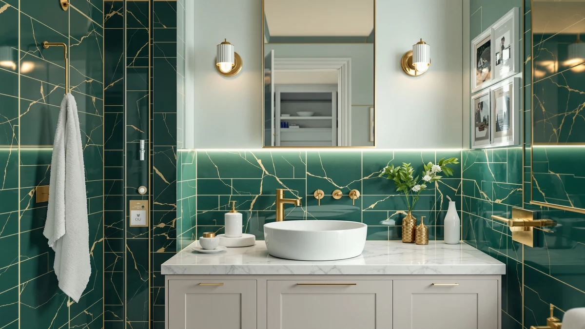

The Best Vanity Tops For small bathrooms (2026)
Prices and picks verified as of September 2026. Independent, reader-supported reviews.


Quick Answer
After comparing seven products for small bathrooms on price, material, and documented dimensions, from a true 24-inch vanity to compact accessories and a couple of larger remodel add-ons, the VINGLI 24 Inch Bathroom Vanity is our top pick among the best vanity tops for small bathrooms because it holds a genuine 24-inch footprint while still delivering a full top and cabinet. If you need to free up counter space rather than replace the vanity, the Bamboo Toothbrush Holder further down is the cheapest fix.
Our pick: VINGLI 24 Inch Bathroom Vanity — $169.99 Check Price on Amazon
Bottom line: our top pick is the VINGLI 24 Inch Bathroom Vanity with Sink at $169.99. The best budget option is the Bamboo Toothbrush Holder for Bathrooms Toothpaste Organizer at $6.99.
Things to Know Before You Buy
- Measure your footprint before you shop for vanity tops for small bathrooms. A 24-inch cabinet like the VINGLI leaves clearance most powder rooms need, while anything wider can crowd a nearby door or toilet.
- Material varies more than the price tag suggests. Most vanities and desks in this comparison use MDF or engineered wood, while the toothbrush holder is solid bamboo, a difference worth knowing if your bathroom sees a lot of standing moisture.
- Small-bathroom accessories add up fast. A $6.99 bamboo toothbrush holder or a $149.99 RIHHA vanity desk can matter as much to a cramped layout as the main vanity top itself.
- Not every pick here is compact. The 59 Inch Acrylic Freestanding Bathtub is included for readers doing a fuller remodel alongside a small vanity, not as a space-saving option on its own.
- Prices in this comparison span $6.99 to $679.99. Know which piece of the small-bathroom puzzle you are solving before you commit a budget to it.
The best vanity tops for small bathrooms have to do more with less room, fitting a sink, counter space, and often storage into a footprint that might only span two or three feet across. Go too wide and a door will not swing clear or a toilet ends up crowded against the cabinet. Go too narrow and you lose the elbow room a bathroom counter is supposed to give you.
We compared seven products that solve pieces of this small-bathroom puzzle, from a compact 24-inch vanity to smaller accessories and a couple of fixtures worth considering during a fuller remodel, using published dimensions, materials, and pricing rather than a hands-on trial. The VINGLI 24 Inch Bathroom Vanity is our top pick for most small bathrooms because it holds a genuine 24-inch footprint while still giving you a full countertop and cabinet storage underneath.
Beyond the vanity itself, a small-bathroom project usually pulls in a handful of smaller decisions: where to put the toothbrushes once counter space is scarce, whether a separate makeup desk earns its floor space, and how a new tub or toilet fits once the vanity is settled. We list the honest drawbacks for each pick below along with the price, material, and size from each listing.
Why You Should Trust Us
Ilane Tall covers bathroom fixtures and small-space storage for Best Bathroom Vanities, where she researches vanities, countertops, and the accessories that round out a finished bathroom for a US audience. For this guide, she and the editorial team compared published dimensions, materials, and pricing for every product under consideration instead of relying on manufacturer marketing copy. We do not run a fake testing lab or claim to have installed any of these products ourselves. Instead, we cross-reference specs and verified owner feedback so you can judge which of the best vanity tops for small bathrooms, and which supporting pieces, fit your layout before you buy.
How We Picked
To build this list, we started with our full product database of bathroom vanities, tops, and small-bathroom accessories, then filtered for listings with documented dimensions, materials, and current pricing. We prioritized vanities with a genuine compact footprint, since a number of listings labeled for small bathrooms turn out to measure 30 inches or wider once you check the spec sheet. We also pulled in a handful of adjacent products, a toothbrush holder, a compact vanity desk, a foldable tub, and two space-conscious toilets, because a small-bathroom project rarely stops at the counter. Every pick needed a clear price and a specific best-use case rather than a vague marketing description, which is why listings without documented dimensions did not make the final seven.
How We Compared
We are a research-based review site, so we compared these seven products using the specs, pricing, and verified owner reviews published for each listing rather than installing or living with them ourselves. We lined up material, stated dimensions, and price side by side to see where each product earns its cost for a small bathroom specifically, and we read through the reviews attached to each listing to flag recurring praise or complaints about assembly, finish, and durability. When a pattern shows up across multiple reviews for a listing, we call it out in that product's drawbacks below instead of repeating the manufacturer's own description. That is the standard behind every comparison in this guide to the best vanity tops for small bathrooms and the products that support them: a published spec sheet plus a pattern in verified customer feedback, not a hands-on impression.
Our Picks

VINGLI 24 Inch Bathroom Vanity
What we like
- 24-inch width fits powder rooms and small bathrooms where a wider vanity would crowd the door or toilet
- 18.5-inch depth keeps the footprint shallow without shrinking the counter to nothing
- At $169.99, it is one of the more affordable complete vanity-and-top combinations in this comparison
Flaws but not dealbreakers
- MDF construction means standing water near the base should be wiped up promptly to avoid swelling
- 33.5-inch height sits above standard counter height, worth checking against your household before you buy
| Material | MDF / engineered wood |
| Size | 24"W x 18.5"D x 33.5"H |
The VINGLI 24 Inch Bathroom Vanity is our top pick among the best vanity tops for small bathrooms because it holds to a genuine 24-inch width, at 24 inches wide, 18.5 inches deep, and 33.5 inches tall, rather than the 28-to-36-inch range a lot of listings drift into once you check the actual spec sheet. That combination of width and depth is what makes it work in a tight powder room or guest bathroom where a few extra inches on either side would crowd a door swing or a neighboring toilet.
At $169.99, it comes in below several of the fixtures in this comparison while still delivering a full vanity top and cabinet, not a counter slab alone. The MDF and engineered wood build keeps the price down, which is standard across most of the picks here, so the usual advice applies: wipe up standing water near the base rather than letting it sit.

Bamboo Toothbrush Holder for Bathrooms
What we like
- Bamboo construction fits the natural-material look many small-bathroom vanities lean into
- At $6.99, it is the least expensive way in this comparison to free up counter space on a small vanity top
- Small enough to sit on any of the vanity tops in this guide without competing for room
Flaws but not dealbreakers
- No listed dimensions, so it is worth checking the product photos against your counter space before ordering
- Bamboo needs to stay dry between uses to hold up over time, unlike the sealed MDF vanities in this list
| Material | Bamboo |
| Size | — |
The Bamboo Toothbrush Holder for Bathrooms is our runner-up pick because it solves a problem every small vanity top eventually runs into: not enough surface area for a toothbrush cup, a soap dish, and everything else that ends up parked on the counter. At $6.99, it is a small purchase next to a $169.99 vanity, but it is also the fastest way to claim back a few square inches on whichever vanity top you choose.
Reviewers point to the bamboo material as the main draw, since it fits a natural, spa-like look better than plastic organizers do and pairs visually with wood-toned pieces like the VINGLI vanity or the RIHHA desk further down this list. The listing does not include specific dimensions, so compare the product photos to your own counter depth before you order, especially on a vanity as shallow as the 18.5-inch VINGLI.

59 Inch Acrylic Freestanding Bathtub
What we like
- 59-inch freestanding design gives a small-bathroom remodel a higher-end look than a standard alcove tub
- Listed construction sits in the same value tier as most vanities in this comparison, keeping the price bracket familiar
Flaws but not dealbreakers
- At 59 inches, this is the least compact product in this comparison and needs real floor space to install
- At $679.99, it is by far the most expensive pick here, roughly four times the cost of the VINGLI vanity
| Material | MDF / engineered wood |
| Size | 59 Inch |
The 59 Inch Acrylic Freestanding Bathtub is the outlier in this comparison of the best vanity tops for small bathrooms, and it earns a place here for a specific reason: some small-bathroom remodels replace the tub along with the vanity, and a freestanding tub at this size is one of the more common upgrades homeowners search for when that happens. At $679.99, it is priced well above every other product in this guide, so it makes the most sense for a fuller renovation budget rather than a quick counter swap.
If your bathroom is tight on square footage, this is not the pick to start with. A 59-inch freestanding tub needs clearance on multiple sides to install and use comfortably, which works against the space-saving goal behind most of the other products in this comparison. It is included here for readers whose small-bathroom project extends past the vanity, not as a compact option in its own right.

Portable Bathtub for Adult Foldable
What we like
- 31.5 by 26.6 inches is a compact footprint, smaller than several vanities in this comparison
- Foldable design means it can be stored away between uses, which matters most in the smallest bathrooms
- At $62.59, it is the second-least expensive product in this comparison after the toothbrush holder
Flaws but not dealbreakers
- Folding portable tubs generally trade some rigidity for storability compared to a built-in tub
- Listed size covers footprint only, so check doorway and storage clearance for how it stores when folded
| Material | MDF / engineered wood |
| Size | 31.5X26.6 IN |
The Portable Bathtub for Adult Foldable is our budget pick for small-bathroom projects that need a soaking option without ripping out plumbing or committing floor space permanently. At 31.5 by 26.6 inches, its footprint is close to some of the vanities in this comparison, and at $62.59 it costs a fraction of the 59-inch freestanding tub above.
The foldable design is the main appeal for a small bathroom, since it does not have to occupy floor space when it is not in use, unlike a fixed tub or shower pan. That flexibility comes with the usual tradeoffs of portable fixtures: it will not match the rigidity of a built-in tub, so it suits occasional use or a temporary setup better than a full-time replacement.

Simple Project 21 Inch High
What we like
- 21-inch comfort height suits taller household members better than a standard-height bowl
- Elongated bowl shape is a common comfort upgrade over a round-front toilet in the same footprint
- At $219.00, it sits in the middle of this comparison's price range
Flaws but not dealbreakers
- Listed specs cover height and bowl shape only, so measure your rough-in before ordering
- MDF-tier construction pricing points to a value-line toilet rather than a premium one-piece design
| Material | MDF / engineered wood |
| Size | 21 Inch Elongated Toilet |
The Simple Project 21 Inch High is an elongated, comfort-height toilet, and it earns a spot in this comparison because a small-bathroom remodel around a new vanity often means replacing the toilet next to it too. At 21 inches to the seat and with an elongated bowl, it targets the comfort-height standard most buyers look for over an older round-front, standard-height model.
At $219.00, it lands between the budget-priced accessories in this guide and the higher-cost freestanding tub, positioning it as a mid-range fixture rather than an entry-level one. The listing does not break out additional specs beyond height and bowl shape, so confirm your existing rough-in distance before ordering, since that measurement determines fit more than any other spec on this page.

Two-Piece Toilets for Bathrooms Comfort
What we like
- 19-inch bowl height suits shorter household members or households with small children better than a 21-inch comfort-height model
- Elongated bowl matches the comfort-focused shape of the Simple Project pick above
- Two-piece design is generally simpler and less expensive to service than a one-piece toilet
Flaws but not dealbreakers
- At $249.99, it costs $30.99 more than the 21-inch Simple Project toilet in this same comparison
- Two-piece construction has a seam between tank and bowl that needs occasional resealing, unlike a one-piece design
| Material | MDF / engineered wood |
| Size | 19" H & Elongated Bowl |
The Two-Piece Toilets for Bathrooms Comfort model gives this comparison a second toilet option at a different height. Where the Simple Project pick above sits at 21 inches for a comfort-height feel, this one measures 19 inches to the bowl, closer to a standard-height toilet, which some households prefer for kids or shorter adults.
At $249.99, it is priced above the 21-inch alternative in this guide, so the choice between the two comes down to preferred seat height rather than price. Both use an elongated bowl and MDF-tier construction, so if your small bathroom's rough-in and clearance work for either, you can decide based on seat height alone.

RIHHA Small Vanity Desk with
What we like
- 16-inch depth is the shallowest footprint of any product in this comparison, useful against a narrow wall
- 54-inch height suits a seated vanity desk rather than a standing sink counter
- At $149.99, it undercuts the VINGLI vanity while adding a second, dedicated surface
Flaws but not dealbreakers
- 24-inch width matches the VINGLI vanity, so measure both together if you plan to fit them in the same room
- MDF construction carries the same moisture caution as the other engineered-wood picks in this guide
| Material | MDF / engineered wood |
| Size | 24"W x 16"D x 54"H |
The RIHHA Small Vanity Desk with is built as a dedicated getting-ready surface rather than a sink-and-counter combination, which makes it a different kind of pick in this comparison of the best vanity tops for small bathrooms. At 24 inches wide, 16 inches deep, and 54 inches tall, its shallow depth is the narrowest footprint here, useful in a bathroom or adjoining dressing area where a full vanity top will not fit against the wall.
At $149.99, it costs less than the primary VINGLI vanity while adding a separate surface for makeup or grooming, which some small-bathroom layouts use to take pressure off the main sink counter. Since its 24-inch width matches the VINGLI pick, measure both pieces together before buying if you are considering the pair for the same room.
Quick Comparison
| Product | Material | Price | Rating | Best for | Get it |
|---|---|---|---|---|---|
| VINGLI 24 Inch Bathroom Vanity | MDF / engineered wood | $169.99 | 4 | True 24-inch small bathrooms | View on Amazon → |
| Bamboo Toothbrush Holder for Bathrooms | Bamboo | $6.99 | 4 | Freeing up counter space | View on Amazon → |
| 59 Inch Acrylic Freestanding Bathtub | MDF / engineered wood | $679.99 | 4 | Full remodels, not compact spaces | View on Amazon → |
| Portable Bathtub for Adult Foldable | MDF / engineered wood | $62.59 | 4 | Budget soaking option, compact footprint | View on Amazon → |
| Simple Project 21 Inch High | MDF / engineered wood | $219.00 | 4 | Comfort-height toilet pairing | View on Amazon → |
| Two-Piece Toilets for Bathrooms Comfort | MDF / engineered wood | $249.99 | 4 | Standard-height toilet pairing | View on Amazon → |
| RIHHA Small Vanity Desk with | MDF / engineered wood | $149.99 | 4 | Dedicated getting-ready desk | View on Amazon → |
The Competition
Several vanity tops and small-bathroom fixtures we reviewed did not make this final list of seven. We passed on listings without a documented material, dimension, or price, since incomplete specs make it impossible to compare fairly against the products above. We also skipped several vanities marketed as small-bathroom options that turned out to measure 30 inches or wider once we checked the actual spec sheet, since that width defeats the purpose for a reader shopping specifically for a compact footprint. A handful of toilet and portable-tub listings were duplicates of the same base product sold under different sellers, offering no real difference in material, dimensions, or price from a product already represented here. Across everything we compared, the VINGLI 24 Inch Bathroom Vanity remains the pick that best matches what most readers mean by the best vanity tops for small bathrooms, with the RIHHA desk and the Portable Bathtub for Adult Foldable as the strongest supporting picks for a compact layout.